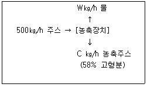

식품기사 (2006-03-05 기출문제)
1과목: 식품위생학
1. Polyvinyl chloride(PVC)에서 위생상 문제가 되는것은?
- 단량체(monomer)
- 2량체(dimer)
- 3량체(trimer)
- 다량체(polymer)
(정답률: 52%)

2. Salmenella속균의 일반 성상 중 잘못된 것은?
- 아포가 없는 Gram 음성의 간균이다.
- 통성 혐기성 균이다.
- 생육 최적온도는 37℃,최적 pH는 7~8이다.
- 보통 배지에서 잘 자라지 않으며 indole을 생산한다.
(정답률: 43%)
3. 관능검사실의 조건을 설명한 것 중 틀린것은?
- 일반적으로 실내온도는 20~25℃가 적당하다
- 습도는 50~60%로 유지한다.
- 태양광선과 인공조명을 함꼐 사용하여서는 안되고 100Lux에 반드시 조도를 맞추어야 한다.
- 환기시설이 있어야한다.
(정답률: 83%)
4. 부패 미생물의 성장에 영향을 미칠 수 있는 식품의 내적인자가 아닌 것은?
- pH
- 산화환원전위
- 상대습도
- 수분활성도
(정답률: 53%)
5. 콜레라의 일반적인 증상에 해당하지 않는 것은?
- 주로 고열을 동반한다.
- 탈수 증상이 일어난다.
- 수양성 설사를 동반한다.
- 잠복기는 보통 수 시간에서 5일이다.
(정답률: 47%)
6. 안전한 급식을 이루기 위하여 실시하는 단체급식 종사원에 대한 정기 건강진단 항목이 아닌 것은?
- 매독혈청검사
- 결핵검사
- 화농성 피부질환 검사
- 갑상선검사
(정답률: 84%)
7. 손에 화농성 상처가 있는 사람이 만든 식품을 먹고 식중독이 일어났다면 그 원인은?
- 장염 비브리오균
- 포도상구균
- 살모넬라균
- 클로스트리디움 보툴리늄
(정답률: 82%)
8. 보존료의 사용 목적을 설명한 것 중 가장 거리가 먼 것은?
- 식품의 부패방지로 인한 선도 유지를 위하여 사용한다.
- 부패 미생물에 대한 정균작용보다 살균작용 때문에 사용한다.
- 식품중의 효소작용 억제의 목적도 있다.
- 식품의 유통단계에 있어서 안전성을 확보하기 위하여 사용한다.
(정답률: 80%)
9. 싹이난 감자를 먹고 식중독이 발생되었다면 다음 중 어느 독소에 의한 것인가?
- 테트로도톡신 (tetrodotoxin)
- 테물린 (temuline)
- 무스카린 (muscarine)
- 솔라닌(solanine)
(정답률: 85%)
10. 1952년 일본에서 발생한 미나마타병은 수은에 의한 중독사고였는데 그 유래는?
- 식품의 용기 및 포장에서 용출된 수은에 의하여
- 식품첨가물중에 협잡물로 존재하는 수은에 의하여
- 공장의 폐수에서 배출된 수은이 어패류에 농축되어서
- 농약중의 수은에 의하여
(정답률: 92%)
11. 식품의 점도를 증가시키고 교질상의 미각을 향상시키는 고분자의 천연물질과 그 유도체인 식품첨가물과 거리가 먼 것은?
- methyl cellulose
- sodium carboxymethyl starch
- sodium alginate
- glycerin fatty acid ester
(정답률: 72%)
12. 알레르기성 식중독의 원인물질과 가장 관계 깊은 것은?
- histamine
- glutamic acid
- solanine
- aflatoxin
(정답률: 93%)
13. 다음 중 유해성 보존료는?
- 롱갈릿 (rongalite)
- 포름알데히드 (formaldehyde)
- 아우라민 (auramine)
- 둘신 (dulcin)
(정답률: 51%)
14. 지구상에 존재하는 물질중에서 가장 강력한 독성을 가진 화학물질의 하나인 다이옥신에 대한 설명으로 적절치 않은 것은?
- 다이옥신의 발생원인에는 자동차 배출가스나 제지공장 등이 있다.
- 다이옥신 중 독성이 가장 큰 TCDD는 생식계 독성을 나타낸다.
- 다이옥신은 색과 냄새가 없는 고체물질로 물에 대한 용해도 및 증기압이 높다.
- 선진국이나 CODEX등 국제기구에서는 잔류 허용기준을 설정하지 않고 1일 섭취허용량만을 기준으로 정하고 있다.
(정답률: 45%)
15. 살균제중 차아염소산나트륨 (sodium hypo chlorite)에 대한 설명 중 틀린 것은?
- 광선에 의해 유해 염소가 분해 되므로 냉암소에 보관한다.
- pH가 높을수록 비해리형 차아염소산의 양이 커지므로 살균력도 높아진다.
- 단백질이나 탄수화물 등의 음식물 찌꺼기가 남아 있으면 소독 효과가 저하된다.
- 유효 염소란 차아염소산 나트륨에 산을 가할 때 발생하는 염소이다.
(정답률: 80%)
16. 가주성이면서 부엌이나 하수구에 서식하는 쥐로서 식품에 병원성 균을 오염시킬 가능성이 가장 높은 쥐는?
- 생쥐
- 집쥐
- 곰쥐
- 등줄쥐
(정답률: 78%)
17. 방사선 조사는 식품 내 세균을 사멸시키고 식물의 발아억제 등의 효과로 위생적인 식품가공기술에 사용된다. 다음 중 방사선 조사에 대한 설명 중 적절치 않은 것은?(오류 신고가 접수된 문제입니다. 반드시 정답과 해설을 확인하시기 바랍니다.)
- 감마선 조사 처리 후 방사능이 식품에 잔류하지 않는다.
- 방사선 조사식품과 방사능 오염식품은 서로 다르다.
- 바이러스는 세균보다 방사선 조사에 대한 내성이 크다.
- 방사선 조사된 원료를 사용한 경우 제품을 조사처리하지 않더라도 방사선 조사 마크를 표시하여야 한다.
(정답률: 38%)
18. 식품에 대한 대장균 검사에서 최확수법(MPN법) 에 의한 정량시험 때 쓰이는 배지는?
- EMB 배지
- Endo 배지
- BGLB 배지
- SS 배지
(정답률: 61%)
19. 제1군 법정 전염병이 아닌 것은?
- 발진티푸스
- 파라티푸스
- 세균성 이질
- 장티푸스
(정답률: 46%)
20. 곰팡이가 생성하는 독소가 아닌 것은?
- aflatoxin
- citrinin
- citreoviridin
- atropin
(정답률: 50%)
2과목: 식품화학
21. 생선이 변질되면서 생성되는 불쾌취가 아닌 것은?
- 트리메틸아민 (trimethylamine)
- 카다베린 (cadaverine)
- 피페리딘 (piperidine)
- 옥사졸린 (oxazoline)
(정답률: 59%)
22. 칼슘대사에 대한 설명으로 옳은 것은?
- 젖산과 유당은 칼슘의 흡수를 억제하는 요인이다.
- 식이섬유소와 시금치는 칼슘의 흡수를 증가 시키는 요인이다.
- 혈 중 칼슘농도 조절인자에는 비타민 D, 칼시토닌, 부갑상선 호르몬이 있다.
- 칼슘은 상처회복을 돕고 면역기능을 원활히 한다.
(정답률: 54%)
23. 에르고스테롤이 자외선을 받으면 활성화되는 이 비타민의 기능을 설명한 것으로 틀린 것은?
- 혈액이 응고되는 중요한 인자가 된다.
- 이것이 부족하면 골다공증을 유발하기도 한다.
- 인(P)의 흡수 및 침착을 도와준다.
- 뼈의 석회화를 도와주는 역할을 한다.
(정답률: 78%)
24. 자연식품의 주요한 감미성분으로 존재하는 과당의 특징을 잘못 설명한 것은?
- 설탕, 맥아당, 유당 중에서 단맛이 가장 강하다.
- 설탕, 맥아당, 유당 중에서 용해도가 가장 크다.
- 과포화 되기 쉽고, 점도가 포도당이나 설탕 보다 작다.
- 흡습 조해성이 아주 약하다.
(정답률: 47%)
25. 설탕에 소금 0.15%를 가했을 때 단맛이 증가되는 현상은?
- 맛의 강화현상
- 맛의 소실현상
- 맛의 변조현상
- 맛의 탈삽현상
(정답률: 85%)
26. 지방의 산패와 관련된 설명으로 맞는 것은?
- 1몰의 트리글리세라이드가 가수분해 되면 2몰의 유리 지방산과 글리세롤이 생성된다.
- 산패가 되면서 공액 이중결합이 비공액이 중결합으로 변하게 된다.
- 점도가 점차로 감소하게 된다.
- 지방산이 산패하는 과정에서 과산화물가가 증가하다가 다시 감소하는 경향을 보이면 저급의 알데히드나 저급의 알콜이 생성된다.
(정답률: 45%)
27. 훈제품 제조시 일어나는 변화와 특성을 설명한 것 중 잘못된 것은?
- 연기성분 중에는 인체에 해로운 페놀 성분도 포함되어 있다.
- 연기성분 중 포름알데히드, 크레졸은 환원성 물질로 지방산화를 막아준다.
- 질산칼륨을 첨가하는 이유는 아질산염을 거쳐서 산화질소가 유리되는 것을 방지하기 위한 것이다.
- 생성된 산화질소는 미오글로빈과 결합 후 가열과정을 통하여 니트로소미오크로모겐으로 변화한다.
(정답률: 45%)
28. 메밀에는 혈관의 저항력을 향상시켜 주는 성분이 함유되어 있다. 다음 중 이 성분은?
- 라이신 (lysine)
- 루틴 (rutin)
- 트립토판 (tryptophan)
- 글루텐(gluten)
(정답률: 53%)
29. 양파를 잘랐을 때 나는 유황화합물의 향기 성분은?
- sedanolide
- taurine
- propylmercaptan
- piperidine
(정답률: 72%)
30. 겨자과 식물의 주된 향기성분은?
- allyl isothiocyanate
- sedanolide
- allicin
- lenthionine
(정답률: 74%)
31. 우유나 두류식품의 제한 아미노산으로 문제시 되는 것은?
- 메티오닌(methionine)
- 라이신(lysine)
- 아르기닌(arginine)
- 트레오닌(threonine)
(정답률: 71%)
32. 식품 중 결합수 (bound water)를 바르게 설명한 것은?
- 미생물의 번식은 물론 포자의 발아에도 이용할 수 없다.
- 미생물의 번식에는 이용이 안되나 포자의 발아에는 이용이 가능하다.
- 0℃이하가 되면 동결한다.
- 식품의 유용성분을 녹이는 용매의 구실을 한다.
(정답률: 62%)
33. 식품의 표면적 특성을 올바르게 설명한 것은?
- 분말 재료의 경우 표면적이 적으면 용해도가 증가한다.
- 표면적이 커지면 커질수록 다른 물질과의 반응성이 떨어진다.
- 입자의 크기를 작게 하면 반응성이 높아진다.
- 우유의 균질화 시키는 목적은 지방 입자를 크게 만들어 맛을 향상시키기 위함이다.
(정답률: 62%)
34. 지방질의 불포화도를 나타내 주는 것은?
- 비누화 값 (saponification value)
- 요오드가 (iodine value)
- 산가 (acid value)
- 폴렌스케 값 (polenske value)
(정답률: 73%)
35. 계란을 가공하면서 일어나는 화학적 변화를 설명한 것으로 잘못된 것은?
- 계란 음료 제조 시 가열 살균에 의하여 응고 되는 것을 방지하기 위해 파파인을 첨가하면 효과적이다.
- 마요네즈 제조시 식초는 미생물에 위한 변화를 최소화시키나 유화가 완전하지 못하면 저장 중 분리현상이 일어난다.
- 동결란 제조를 위해 난백을 -20℃에서 -30℃ 조건에서 신속하게 동결시키면 미생물이 멸균되므로 별도의 살균처리는 하지 않아도 된다.
- 난황이 유화능은 친수성기와 소수성기가 뚜렷하게 구분 되어 있어 계면활성제로서의 역할을 충분히 한다.
(정답률: 74%)
36. 포화지방산이 아닌 것은?
- lauric acid
- palmic acid
- stearic acid
- linoleic acid
(정답률: 70%)
37. 다음은 일반적으로 알려진 마늘의 생리활성 및 효능을 나타낸 것이다. 틀린 것은?
- 항당뇨병 작용
- 항암 작용
- 혈(血)중 콜레스테롤 감소 작용
- 항혈전 작용
(정답률: 60%)
38. TBA(thiobarbituric acid) 시험은 무엇을 측정하고자 하는 것인가?
- 필수 지방산의 함량
- 지방의 함량
- 유지의 불포화도
- 유지의 산패도
(정답률: 66%)
39. 일반적으로 육류의 맛은 단백질 가수분해물인 아미노산에 의해 지미(旨味)를 나타내고 있는데 이들 아미노산 외에 중요한 또 하나의 맛 성분은 ATP가 분해되어 생성된 것이다. 이것은 어떤 물질인가?
- 모노소디움 글루타메이트
- 구아닐산
- 이노신산
- 아스파라진산
(정답률: 60%)
40. 아미노산인 알라닌(alanine)이 스트렉커(Strecker) 반응을 거치면 어느 것으로 변하는가?
- 초산 (acetic acid)
- 에탄올 (ethanol)
- 아세트아마이드 (acetamide)
- 아세트알데히드 (acetaldehyde)
(정답률: 67%)
3과목: 식품가공학
41. 다음의 막분리공정 중 치즈훼이(whey)로부터 유당(lactose)을 회수하는데 적합한 공정은 어느 것인가?
- 정밀여과
- 한외여과
- 전기투석
- 역삼투
(정답률: 43%)
42. 크림과 버터의 유화상태를 바르게 표현한 것은?
- 크림은 지방이 65%이고 물이 35%이다.
- 크림은 지방이 35%이고 물이 65%이다.
- 버터는 물이 85%이고 지방이 15%이다.
- 버터는 물이 35%이고 지방이 65%이다.
(정답률: 31%)
43. 콩의 영양을 저해하는 인자와 관계가 없는 것은?
- 트립신 저해제 (trypsin inhibitor) : 단백질 분해효소인 트립신의 작용을 억제 하는 물질
- 리폭시게나제 (lipoxygenase) : 비타민과 지방을 결합시켜 비타민의 흡수를 억제하는 물질
- Phytate (inositol hexaphosphate) : - Ca, P, Mg, Fe, Zn 등과 불용성 복합체를 형성하여 무기물의 흡수를 저해 시키는 작용을 하는 물질
- 라피노스(raffinose),스타키오스(stachyose) : 우리 몸속에 분해효소가 없어 소화되지 않고, 대장내의 혐기성 세균에 의해 분해되어 N2, CO2, H2, CH4 등의 가스를 발생시키는 장내 가스인자
(정답률: 51%)
44. 우유의 살균여부를 판정하는데 이용되는 적당한 방법은?
- 알콜 테스트
- 산도측정
- 비중검사
- 포스파타아제 테스트
(정답률: 74%)
45. 동결건조의 원리를 가장 잘 나타낸 것은?
- 증발에 의한 건조
- 동결에 의한 건조
- 승화에 의한 건조
- 진공에 의한 건조
(정답률: 76%)
46. 통조림 제조 시 탈기 방법이 아닌 것은?
- 가열 탈기법
- 기계적 탈기법
- 증기 분사법
- 가스 분사법
(정답률: 57%)
47. 다음의 살균기술 중 비열살균에 해당되지 않는 것은?
- 마이크로웨이브 살균
- 초고압 살균
- 고전장 펄스 살균
- 방사선 살균
(정답률: 56%)
48. 안지름 2.5㎝의 파이프안으로 21℃의 우유가 0.10m3/min의 유속으로 흐를 때 이 흐름의 상태를 어떻게 판정하는가? (단, 우유의 점도 및 밀도는 각각 2.1 × 10-3PaㆍS 및 1029㎏/m3이다.)
- 층류
- 중간류
- 난류
- 경계류
(정답률: 52%)
49. 유지의 정제에 대한 설명으로 옳지 않은 것은?
- 채취한 원유에 있는 불순물들은 유지 중에 뜨거나 가라 앉아서 유지를 흐리게 하고 산패를 촉진하여 결국 불쾌한 냄새와 맛을 띠게 된다.
- 원유 중에 들어 있는 불순물 중에 흙, 모래, 원료의 조각 등과 같이 침전된 상태로 섞여 있는 것은 정치법, 여과법, 원심분리법 등이 방법으로 비교적 쉽게 제거 할 수 있다.
- 단백질, 점질물, 검질 등과 같이 유지 중에 교질상태로 있는 것은 기계적인 처리만으로 분리하기 어렵다.
- 지방산, 색소, 냄새나는 물질 등은 기름에 녹아 있으므로 이들 성분은 화학적인 방법으로 쉽게 제거할 수 있다.
(정답률: 56%)
50. 고기의 해동강직에 대한 설명으로 올바르지 않은 것은?
- 골격으로부터 분리되어 자유수축이 가능한 근육은 60~80% 까지의 수축을 보인다.
- 가죽처럼 질기고 다즙성이 떨어지는 저품질의 고기를 얻게 된다.
- 해동강직을 방지하기 위해서는 사후강직이 완료된 후에 냉동해야 한다.
- 냉동 및 해동에 의하여 고기의 칼슘결합력이 높아져서 근육수축을 촉진하기 때문이다.
(정답률: 67%)
51. 경화유 제조에 사용되는 수소 첨가용 촉매는?
- Cu
- Ni
- Mg
- Fe
(정답률: 79%)
52. 다음 중 소시지를 만드는 데 사용되는 중요한 기구와 가장 거리가 먼 것은?
- 초퍼
- 연합기
- 혼합기
- 교동기
(정답률: 63%)
53. 과채류를 블랜칭(blanching)하는 목적과 가장 거리가 먼 것은?
- 조직을 유연하게 한다.
- 박피를 용이하게 한다.
- 산화효소를 불활성화 시킨다.
- 향미성분을 보호한다.
(정답률: 87%)
54. 저산성 식품의 통조림은 일반적으로 어떤 방법으로 살균하는가?
- 저온살균
- 상압살균
- 고압살균
- 간헐살균
(정답률: 53%)
55. 마카로니는 무슨 면인가?
- 냉면
- 선절면
- 연면
- 압출면
(정답률: 78%)
56. 식품의 냉동 저장중에 일어나는 변화 중 freezer burn을 가장 바르게 설명한 것은?
- 표면수분의 승화로 표면이 다공질이 되고, 이에 따라 유지의 산화, 변색, 단백질의 변성, 풍미의 저하 등을 심하게 일으킨 상태.
- 표면이 승화되어도 내부의 수분은 얼어 있는 상태이므로 외부만 부슬부슬하게 된 상태
- 표면의 승화로 건조 , 중량감소, 이취 등을 심하게 일으키는 경우
- 표면 수분의 승화로 내부유지의 유화상태의 파괴, 육질의 손상 등으로 외부적 변색이 심 한 경우
(정답률: 63%)
57. 농축장치를 사용하여 오렌지 주스를 농축하고자 한다. 원료인 오렌지 주스는 7.08%의 고형분을 함유하고 있으며, 농축이 끝난 제품 은 58%의 고형분을 함유하도록 한다. 원료주 스를 500㎏/h의 속도로 투입할 때 증발 제거되는 수분의 양(W)과 농축주스의 양(C)은 얼마인가?

- W=375.0㎏/h, C=125.0㎏/h
- W=125.0㎏/h, C=375.0㎏/h
- W=439.0㎏/h, C=61.0㎏/h
- W=61.0㎏/h, C=439.0㎏/h
(정답률: 44%)
58. 냉동란 제조시 첨가하는 첨가물과 그 기능이 아닌 것은?
- Gum - 전란을 진하게 한다.
- Phosphates - 저온에서 살균할 수 있게 한다.
- Citric acid - pH를 조정한다.
- Triethycitrate - 열처리를 받는 난백의 거품 성질을 개선한다.
(정답률: 26%)
59. 밀의 제분공정에서 조질(調質)이란?
- 외피와 배유의 분리를 쉽게 하기 위한 것
- 밀가루의 품질을 균일하게 하기 위한 것
- 외피의 분쇄를 쉽게 하기 위한 것
- 협잡물을 제거하기 위한 것
(정답률: 63%)
60. 우유의 균질화(homogenization)시키는 목적이 아닌 것은?
- 지방구의 분리를 방지한다.
- 미생물의 발육이 저지된다.
- 커드(curd)가 연하게 되며 소화가 잘 된다.
- 지방구가 가늘게 된다.
(정답률: 74%)
4과목: 식품미생물학
61. 다음 효모의 설명 중 틀린 것은?
- 산막효모에는 Debaryomyces속, Pichia속, Hansenula속이 있다.
- 산막효모는 산화능이 강하고 비산막효모는 알콜 발효능이 강하다.
- 맥주상면발효효모는 raffinose를 완젼발효하고 맥주 하면 발효효모는 raffinose를 1/3만 발효한다.
- 야생효모는 자연에 존재하는 효모이고, 배양효모는 유용한 순수 분리한 효모이다.
(정답률: 76%)
62. 다음 세균 중 외막(outer membrane)을 갖고 있는 것은?
- Lactobacillus속
- Staphylococcus속
- Escherichia속
- Corynebacterium속
(정답률: 42%)
63. 곰팡이의 형태를 설명한 것 중 틀린 것은?
- 자실체는 성숙한 균사체에서 균사가 갈라져 가지가 위로 뻗고 그 끝에 포자를 갖는 구조를 말한다
- 균사체는 균사들의 집합체를 말한다.
- 규사는 주로 키틴의 주성분인 세포벽이 세포질을 보호하고 있으며, 영양물질이 수송되는 통로가 된다.
- 영양균사는 기질 표면에서 공기 중으로 직립한 균사를 말한다.
(정답률: 45%)
64. 미생물 세포의 핵산에 관한 설명 중 틀린 것은?
- 미생물이 함유하는 DNA의 양은 항상 RNA의 양보다 많고 DNA의 함량은 균의 배양 시기에 따라 차이를 나타낸다.
- RNA는 단백질의 합성이 왕성할 때 증가하다가 이후 감소 하지만 DNA의 양은 거의 일정하다.
- DNA는 세포의 분열 증식 등 유전에 관여한다.
- RNA는 단백질의 합성과 효소의 생산에 관여한다.
(정답률: 51%)
65. 대장균 O157:H7에 대한 설명 중 맞지 않는것은?
- 100℃에서 30분 가열하여도 파괴되지 않을 만큼 열에 강하다.
- 베로톡신을 생산하며 감염 후 용혈성 요독 증후군을 일으키기도 한다.
- pH3.5 정도의 산성조건에서도 살아남는다.
- 장관출혈성 대장균으로 혈변과 설사가 주증상으로 나타난다.
(정답률: 49%)
66. 홍조류에 대한 설명 중 틀린 것은?
- 클로로필 이외에 피코빌린이라는 색소를 갖고 있다.
- 열대 및 아열대 지방의 해안에 주로 서식하며 한천을 추출하는 원료가 된다.
- 세포벽은 주로 셀룰로오스와 알긴으로 구성되어 있으며 길이가 다른 2개의 편모를 갖고 있다.
- 엽록체를 갖고 있어 광합성을 하는 독립영양 생물이다.
(정답률: 53%)
67. 내생포자(endospore)를 형성하는 균 중 빵이나 밥에서 증식하며 청국장 제조에 관여하는 것은?
- Bacillus속
- Sporosarcina속
- Desulfotomaculum속
- Sporolactobacillus속
(정답률: 78%)
68. 파이지(phage)에 오염되었다는 현상으로 옳지 않은 것은?
- 이상발효를 일으키는 인자가 세균여과기를 통과한다.
- 살아있어서 대사가 왕성한 세균의 세포내에 서만 증식한다.
- 이상 발효를 일으키는 인자를 가해 주면 발효가 빨라지거나 탁도가 증가한다.
- 숙주균 특이성이 있다.
(정답률: 50%)
69. 맥주효모 세포의 기본적인 형태는?
- 계란형(cerevisiae type)
- 타원형(ellipsoideus type)
- 소시지형(pastorianus type)
- 레몬형(apiculatus type)
(정답률: 64%)
70. 유전암호에서 1개의 암호단위인 codon은 몇 개의 핵산 염기로 되어 있는가?
- 2개
- 3개
- 4개
- 5개
(정답률: 68%)
71. 간장용 종국균은?
- Aspergillus niger
- Aspergillus oryzae
- Aspergillus kawachi
- Aspergillus shirousami
(정답률: 68%)
72. 탄소원으로서 CO2를 이용하지 못하고 다른 동식물에 의해서 생성된 유기탄소화합물을 이용하는 미생물을 일반적으로 무엇이라 하는가?
- 독립영양 미생물
- 호기성 미생물
- 호염성 미생물
- 종속영양 미생물
(정답률: 78%)
73. 다음에 열거해 놓은 세균들이 속 중 Entero bacteriaceae과에 속하지 않는 것은?
- Eschrichia 속
- Klebslella 속
- Pseudomonas 속
- Shigella 속
(정답률: 38%)
74. 곰팡이의 분류나 동정하는데 적용되지 않는 항목은?
- 균사의 격벽의 유무
- 편모의 존재와 형태 및 위치
- 유성포자 형성 여부 및 종류
- 무성포자의 종류
(정답률: 70%)
75. Clostridium butyricum이 장내에서 정장작용을 나타내는 것은?
- 강한 포자를 형성하기 때문이다.
- 유기산을 생성하기 때문이다.
- 항생물질을 내기 때문이다.
- 길항세균으로 작용하기 때문이다.
(정답률: 42%)
76. 미생물과 그 이용에 대한 설명이 옳지 않은 것은?
- Bacillus subtilis - 단백분해력이 강하여 메주에서 번식한다.
- Aspergillus oryzae - amylase와 protease 활성이 강하여 코오지(koji)균으로 사용된다.
- Propionibacterium shermanii - 치즈눈을 형성시키고, 독특한 풍미를 내기 위하여 스위스치즈에 사용된다.
- Kluyveromyces lactis - 내염성이 강한 효모로 간장의 후숙에 중요하다.
(정답률: 70%)
77. 알콜 발효에 대한 설명 중 맞지 않은 것은?
- 미생물이 알콜을 발효하는 경로는 EMP경로와 ED경로가 알려져 있다.
- 알콜 발효가 진행되는 동안 미생물 세포는 포도당 1분자로 부터 2분자의 ATP를 생산한다.
- 효모가 알콜 발효하는 과정에서 아황산나트륨을 적당량 첨가하면 알콜 대신 글리세롤이 축적되는데, 그 이유는 아황산나트륨이 alcohol dehydrogenase 활성을 저해하기 때문이다.
- EMP경로에서 생산된 pyruvic acid는 decar boxylase에 의해 탈탄산되어 acetaldehyde로 되고 다시 NADH로부터 alcohol dehyd rogenase에 의해 수소를 수용하여 ethanol 로 환원된다.
(정답률: 42%)
78. 세균의 증식법에 대한 설명으로 옳지 않은 것은?
- 대부분의 세균은 이분법으로 증식한다.
- 내생포자를 형성하는 것도 있다.
- 균종에 따라 세포벽 형성방법이 차이가 있 다.
- 출아에 의하여 증식한다.
(정답률: 69%)
79. 효모의 생육억제 효과가 가장 적은 것은?
- glucose 50%
- glucose 30%
- sucrose 50%
- sucrose 30%
(정답률: 44%)
80. 파아지(phage)의 피해와 관계가 없는 발효는?
- ethanol 발효
- cheese 발효
- glutamic acid 발효
- acetone-butanol발효
(정답률: 46%)
5과목: 생화학 및 발효학
81. 빵효모 배양 시 배양관리 방법이 옳은 것은?
- 균체 수득율을 높이기 위해서 배양액 중의 당농도를 10% 이상으로 높게 한다.
- 충분한 증식을 위해 배양 종료시까지 질소원을 충분히 공급하여 준다.
- 인산농도가 너무 많으면 효모의 발효력이 저하되어 품질이 나빠진다.
- 능률적으로 효모균체를 생산하기 위해서 배양초기에는 충분한 산소공급을 해야 한다.
(정답률: 24%)
82. 청주 양조시 발효 후기에 향기성분을 생성하여 발효에 유익한 효모는?
- Saccharomyces 속
- Pichia 속
- Hansenula 속
- Rhodotorula 속
(정답률: 17%)
83. 맥아의 좋은 품질을 나열한 것으로 틀린 것은?
- 맥아의 어린 뿌리가 잘 제거되어 있다.
- 수분 함량이 10% 정도이다.
- 약한 감미는 있으나 산미가 없어야 한다.
- 당화력이 강해야 한다.
(정답률: 36%)
84. 현재의 주정 제조방법을 이용시 원료로서 적합지 않은 것은?
- 당밀
- 고구마 전분
- 자일란(xylan)
- 타피오카 전분
(정답률: 56%)
85. 광합성의 암반응(Calvin reaction)으로부터 포도당이 합성될 때 관련된 중간산물이 아닌 것은?
- 3-phosphoglycerate
- xylose-5-phsphate
- ribulose-1,5-diphosphate
- glyceraldehyde-3-phosphate
(정답률: 63%)
86. 푸마르산(fumaric acid)의 생산균은?
- Aspergillus niger
- Aspergillus oryzae
- Rhizopus oryzae
- Rhizopus nigricans
(정답률: 40%)
87. Nucleotide 의 화학구조와 정미성을 나타낸것 중 맞는 것은?
- Ribose의 3‘ 위치에 인산기를 가진다.
- Ribose의 5‘ 위치에 인산기를 가진다.
- 염기가 pyrimidine계의 것이어야 한다.
- Trinucleotide에만 정미성이 있다.
(정답률: 77%)
88. 주정제조시 단식 증류기에 비교하여 연속식 증류기의 장점이 아닌 것은?
- 연료비가 많이 든다.
- 일정한 농도의 주정을 얻을 수 있다.
- 알데히드의 분리가 가능하다.
- Fusel유의 분리가 가능하다.
(정답률: 64%)
89. Acetyl-CoA로부터 만들 수 없는 것은?
- 담즙산
- 엽산
- 지방산
- 콜레스테롤
(정답률: 56%)
90. 진핵세포에서 생체에너지 형성 대사과정이 일어나는 기관은?
- 메소좀
- 골지체
- 미토콘드리아
- 핵
(정답률: 79%)
91. Corynebacterium glutamicum의 homoserine 영양요구주에 의해 주로 공업적으로 생산되는 아미노산은?
- 라이신(lycine)
- 글리신(glycine)
- 메티오닌(methionine)
- 글루탐산(glutamic acid)
(정답률: 25%)
92. 비타민 C를 만들 때 발효미생물을 사용하여 발효시키는 공정은?
- D-glucose → D-sorbitol
- D-sorbitol → D-sorbose
- L-sobose → diacetone-L-sorbose
- diacetone-L-gluconic acid → 비타민 C
(정답률: 46%)
93. 포도주 양조시 아황산을 첨가하는 이유로 보기 어려운 것은?
- 포도즙의 청징화
- 포도즙의 색깔 생성
- 포도즙의 산화를 방지
- 유해미생물의 살균과 오염방지
(정답률: 55%)
94. 2분자의 피루빈산(pyruvate)에서 한분자의 글루코오스(glucose)가 만들어질 때 소모되는 고에너지 인산결합(High energy phosphate bond)의 수는?
- 2
- 4
- 3
- 6
(정답률: 31%)
95. IMP는 어떤 물질의 전구체인가>
- guanosine과 adenosine
- uracil과 thymine
- uridylic acid와 cytidylic acid
- adenylic acid와 guanylic acid
(정답률: 50%)
96. 다음 활성 물질과 균주간에 관련이 없는 것은?
- Vitamin B2 - Eremothecium ashbyii
- Ascorbic acid - Acetobacter suboxydans
- Isovitamin C -Pseudomonas fluorescens
- Carotenoid - Gluconobacter roseus
(정답률: 37%)
97. 균체내 효소를 추출하기 위해 사용되는 방법은?
- 염석법
- 투석법
- 초음파처리법
- 흡착법
(정답률: 28%)
98. 비타민과 조효소의 관계가 틀린 것은?
- 비타민 B1 - TPP
- 비타민 B2 - FAD
- 비타민 B6 - THF
- Niacin - NAD
(정답률: 58%)
99. 항생물질인 페니실린의 세포내 작용 기작으로 옳은 것은?
- 영양물질 수송에 관여하는 세포막 합성저해
- 세포벽, 세포질에 존재하는 지질(lipid) 생합성 저해
- 세포벽 합성과정중의 transpeptidation 저해
- 리보솜에 작용하여 단백질 합성 저해
(정답률: 45%)
100. 가수분해 에너지가 가장 큰 인산화합물은?
- phosphoenolpyruvate
- 1,3-diphosphoglycerol phosphate
- phosphocreatine
- ATP
(정답률: 27%)